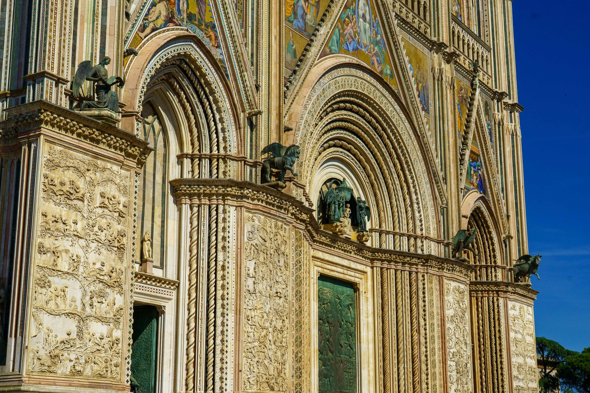
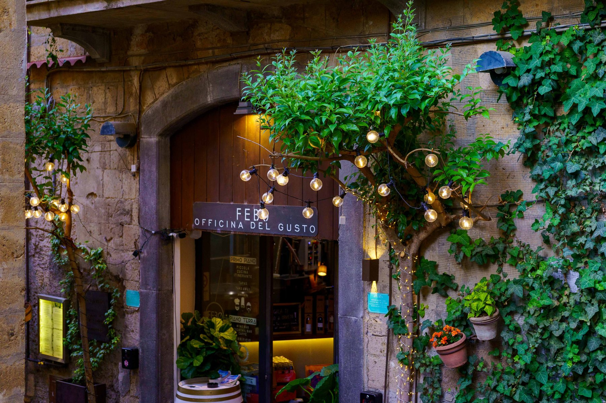
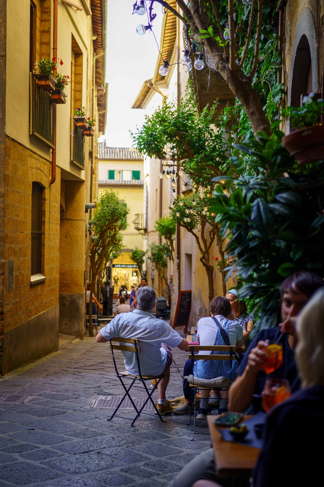
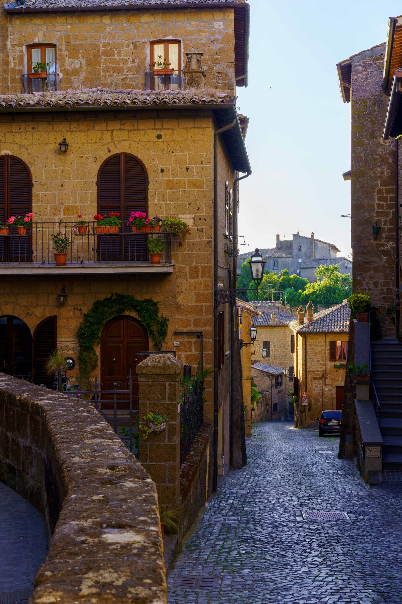
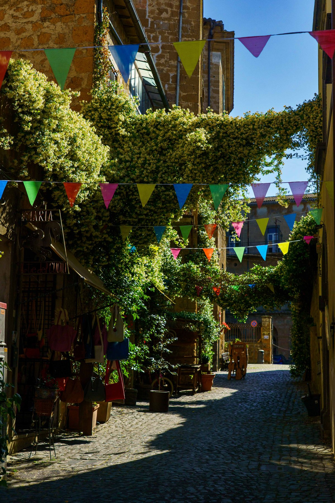

Orvieto
Perched on a plateau of volcanic tuff above the Umbrian countryside, Orvieto trades Rome's crowds for quiet cobblestone lanes and golden stone buildings dripping with geraniums. Its centerpiece is the Duomo, a Gothic cathedral whose facade is an explosion of mosaics, bronze reliefs, and gilded detail unlike anything else in the region. Just off the main streets, alleys strung with colorful bunting and jasmine vines lead past the town's leather workshops, one of its oldest crafts. As evening falls, Febo Officina del Gusto glows with string lights tucked into its ivy canopy, a fitting spot to end a day spent wandering a town that feels like it hasn't changed in centuries.




